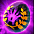
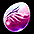
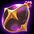
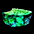
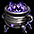

クリーチャーシステム 2023


概要
ネフォンクリーチャーとは、コクーンから出現する新しい概念の召喚獣です。メインクリーチャー1匹を活性化して連れて歩けます。
クリーチャーを成長させることでキャラクターは様々な恩恵を受けられます。

クリーチャーはコクーンを通して入手できます。
コクーン毎に入手できるクリーチャーが異なります。
下記はコクーンごとに入手できるクリーチャーの一覧です。
閉じる
| 種類 | 出現する Rank | |
|---|---|---|
| ペブルコクーン |  |
N / R / HR |
| ソーラーコクーン |
R / HR / SR /
LR 出現確率 |
|
| プリズムコクーン |  |
HR / SR / LR 40％の確率でSR以上 出現確率 |
| エオスコクーン | N / R / HR/ SR | |
| ヘーリオスコクーン |
R / HR / SR /
LR |
|
| セレーネコクーン |
R / HR / SR /
LR ※復帰者クエなどで入手可能 |
|
| ピックアップ系 | ||
| サマーコクーン |  |
R / HR / SR /
LR 一部対象コクーンの出現率UP サマー出現ＵＰ |
| ハロウィンコクーン |  |
R / HR / SR /
LR 一部対象コクーンの出現率UP 期間限定イベント |
| クリスマスコクーン |  |
R / HR / SR /
LR 一部対象コクーンの出現率UP 期間限定イベント |
| Fate[HF]コラボ |  |
R / HR / SR /
LR 一部対象コクーンの出現率UP 期間限定イベント |
| アケインコクーン |  |
R / HR / SR /
LR ※ 以下のクリーチャーの登場確率が上昇します。 アスター、エスター、ウスター、イスター、メラニー、カイザー、トワイライト、ラクネーラ、ハーモニー |
| アストラルコクーン |  |
R / HR / SR /
LR 一部対象コクーンの出現率UP アストラル出現ＵＰ |
| ノーブルコクーン |
R / HR / SR /
LR ※ 以下のクリーチャーの登場確率が上昇します。 タイニーフォックス、リトルロトル、ホエーリ、セイクリッドフォックス、ドレカニア、ホエーザランド、プチランサー、プチウィザード 出現確率 |
|
| ブランドニューコクーン |  |
R / HR / SR /
LR 一部対象コクーンの出現率UP ブランドニュー出現ＵＰ |
| ミスティックコクーン |  |
R / HR / SR /
LR 一部対象コクーンの出現率UP ミスティック出現ＵＰ |
| リベラコクーン |  |
R / HR / SR /
LR 一部対象コクーンの出現率UP リベラ出現ＵＰ |
| ピックアップコクーン |
R / HR / SR /
LR 一部対象コクーンの出現率UP 期間限定イベント |
|
| 確定入手系 | ||
| HR確定コクーン |
100%の確率でHR |
|
| SR確定コクーン |  |
100%の確率でSR |
| LR確定コクーン |
100%の確率でLR ※ランダムに1つを入手 |
|
| LR選択コクーン |
100%の確率でLR ※1つを選択して入手、GRは対象外。 |
|
| 指定1体入手系 | ||
| サキュバスヴェラコクーン |  |
100%の確率でサキュバスヴェラコクーン出現 |
| プチダリンコクーン |
100%の確率でプチダリン出現 |
|
| プチデリンコクーン |  |
100%の確率でプチデリン出現 |
| ナースヴェラコクーン |  |
100%の確率でナースヴェラ出現 |
| 獅子舞レビットコクーン |
100%の確率で獅子舞レビット出現 |
|
「ネフォンクリーチャー」のランクは、 N（ノーマル）、R（レア）、 HR（ハイレア）、 SR （スーパーレア）、 LR（レジェンドレア）、GR（神話）の6種類が存在します。
タイプは、力・知識・健康・サポートの4つに分かれ、成長するとタイプによって違う形で育ちます。

補足
※ここに記載された以外でも多数の種類のコクーンが存在します。※コクーンには取引可と取引不可のものがあります。詳細はツールチップをご確認ください。
（[E]付きは確実に取引不可）
[ＬＲ確定コクーン補足]
※コラボクリーチャーは出現しません。
※取引・銀行預入・ギルド倉庫預入可能
クリーチャー編成によるパッシブ効果
(2019/4/23 改訂) 各クリーチャーが[メイン効果1種]+[サブ効果2種]のパッシブ効果を持つようになりました。メインクリーチャー1体とサブクリーチャー3体のパッシブ効果を編成によって得られます。

各クリーチャーのパッシブ性能および各パッシブ効果一覧
設定したクリーチャーの内、メインクリーチャーはメイン・サブ効果の計3種のパッシブ効果が、
サブクリーチャーはサブ効果2種のパッシブ効果が活性化します。
活性化している同種のパッシブ効果は、合算されたレベルの効果が適用されます。
パッシブスキルを合算後、20Lv/30Lv/40Lv/50Lv到達時には1つのパッシブスキルから複数の効果を得られることがあります。
- パッシブ効果のレベルは50Lvまで。
- メインとサブに同じクリーチャーを1体ずつ登録可能。
- サブに同じクリーチャーを複数登録することはできません。
育成
各クリーチャーは「ステータス」を持っており、各クリーチャーの詳細から確認できます。
活性化したクリーチャーのステータスの半分の数値が持ち主のステータスとして追加されます。
(知恵・カリスマ以外の5ステータスが対象)
例）上記画像のアニマタマジシャンをメインクリーチャーにした場合、以下ステータスが増加します。
力+104、知識+172、敏捷+137、運+145、健康+141
多くのクリーチャーのステータスは以下の法則性で決まります。
クリーチャーのタイプによって伸びるステータスに差があります。(サポートはまんべなく伸びる)
等級が高いクリーチャーほど高いステータス恩恵を得られますが、後述するクリーチャー強化によって等級を上昇させられます。
| Rank | N ノーマル |
R レア |
HR ハイレア |
SR スーパーレア ラミア以外 |
SR スーパーレア ラミア |
LR レジェンドレア |
|---|---|---|---|---|---|---|
| 最大Lv | 60 | 70 | 80 | 90 | 100 | |
| 必要経験値 | 34505 | 60039 | 128000 | 218673 | 374901 | |
| 初期ステータス | 110 | 122 | 135 | 160 ※ | 166 | 190 |
| ステータス上昇 | 11 | 14 | 18 | 24 ※ | 30 | 35 |
| ボーナスポイント | 1 | 2 | 3 | 4 | 5 | |
| 必要強化値 | 500 | 1400 | 3900 | 10900 | - | |
| 素材強化値 | 40 | 100 | 300 | 1000 | 3000 | |
| スキル強化 必要ゴールド |
1万 | 5万 | 8万 | 12万 | 20万 | |
| 攻撃力 | STR+INT/2 (小数点以下切捨て) | |||||
| HP | VIT*12 | |||||
※バーサーカー、ケンタウロスナイトは初期ステータス162、ステータス上昇26で、通常のSRとは少し異なります。
※アーチャーは初期ステータス163、ステータス上昇27で、通常のSRとは少し異なります。
※GRについては未検証。
クリーチャーを成長させるには、クリーチャーに餌を与える必要があります。
連れているメインクリーチャーの場合、クリーチャーの力の指輪を使って育成することもできます。

餌によって獲得できる経験値が異なります。
等級ごとのクリーチャー必要経験値はクリーチャー等級ごとの必要経験値一覧よりご確認ください。
以下に餌と各等級のクリーチャーをLvMAXにするのに必要な餌の数をまとめます。
閉じる
| 餌 | 獲得経験値 | N Max | R Max | HR Max | SR Max | LR Max | |
|---|---|---|---|---|---|---|---|
| 発火石 | 5 | 6901 | 12008 | 25600 | 43735 | 74981 | |
| 断熱石 | 5 | 6901 | 12008 | 25600 | 43735 | 74981 | |
| 修復済みタティリス遺跡の出土品 | 80 | 432 | 751 | 1600 | 2734 | 4687 | |
| 結晶石 | 150 | 231 | 401 | 854 | 1458 | 2500 | |
|  | 共鳴石 | 150 | 231 | 401 | 854 | 1458 | 2500 |
| 神秘の石 | 170 | 203 | 354 | 753 | 1287 | 2206 | |
 |
クリーチャー鍛錬の結晶(小) | 500 | 70 | 121 | 256 | 438 | 750 |
| 炎の石 | 600 | 58 | 101 | 214 | 365 | 625 | |
 |
クリーチャー鍛錬の結晶(中) | 1000 | 35 | 61 | 128 | 219 | 375 |
| 異界の強化石 | 1300 | 27 | 47 | 99 | 169 | 289 | |
|
クリーチャー鍛錬の結晶(大) | 2000 | 18 | 31 | 64 | 110 | 188 |
| クリーチャー鍛錬のポーション(小) | 2300 | 16 | 27 | 56 | 96 | 164 | |
| クリーチャー鍛錬のポーション(中) | 2760 | 13 | 22 | 47 | 80 | 136 | |
| クリーチャー鍛錬のポーション(大) | 2910 | 12 | 21 | 44 | 76 | 129 | |
| クリーチャー鍛錬の上級ポーション(小) | 3680 | 10 | 17 | 35 | 60 | 102 | |
| クリーチャー鍛錬の上級ポーション(中) | 4416 | 8 | 14 | 29 | 50 | 85 | |
| クリーチャー鍛錬の上級ポーション(大) | 6256 | 6 | 10 | 21 | 35 | 60 | |
クリーチャーの餌はクリーチャー詳細画面の[+]ボタンを押すことで与えられます。

まとめて餌を与えられるように改修されました。
クリーチャー成長の秘薬を所持している場合、チェックして餌を与えることで成長をより早められます。

※こちらは破壊可能に修正されました。
レベルMAXになったクリーチャーにはこれ以上の餌を与えることはできません。
ゴールデンメダル

ソーラーコクーンなどの課金コクーンを使うと稀にステータスが強化された状態のクリーチャーが出てくることがあります。
（ステータスの一部が光っている、上記の場合VITがゴールデンメダル強化状態）
獲得時、クリーチャーのステ・スキルのうちランダムに付加されています。
クリーチャーメダルを使うことで任意のペットに付与することもできます。

ステの場合、毎レベアップ時に+2の恩恵を得られます。
スキルの場合、スキルが+5(上限も+5引き上げ)される効果があります。
ゴールデンメダルはクリーチャー合成時に新しく生成されたペットに引き継がれます。
合成時、付与される部位は再抽選されます。
素材クリーチャーが複数ゴールデンメダルを所持している場合は、 最低[1個]から最大[素材クリーチャーのゴールデンメダル合計数]までの個数のゴールデンメダルがランダムで付与されます。
クリーチャー強化
クリーチャーの等級を上昇させられるシステムです。クリーチャーの等級が上昇すると最大Lvが10上がります。
また、クリーチャー覚醒システムにおける「限界覚醒レベル」を上昇させられます。

必要強化値を満たすと該当クリーチャーを強化できます。
最大12枠しかないため、12枠の中でクリーチャーを強化する必要があります。
※クリーチャーのインベントリは最大54枠まで拡張できますが、強化にセットできる枠は12で固定。
※クリーチャーのカバンを広げるには課金アイテム「アケインネスト」が必要です。

クリーチャー強化に必要な強化値についてまとめます。
| Rank | N ノーマル |
R レア |
HR ハイレア |
SR スーパーレア |
LR レジェンドレア |
|---|---|---|---|---|---|
| 昇格の必要強化値 | 500 | 1400 | 3900 | 10900 | - |
| 2段階昇格に必要な強化値 | (R->HR)？ | (HR->SR)？ | (SR->LR)7900 | - | - |
| 3段階昇格に必要な強化値 | (HR->SR)？ | (SR->LR)？ | - | - | - |
| 4段階昇格に必要な強化値 | (SR->LR)？ | - | - | - | - |
| 同タイプの強化値 | 60 | 150 | 450 | 1500 | 4500 |
| 違タイプの強化値 | 40 | 100 | 300 | 1000 | 3000 |
| 目安 | N９体 | R９体 | HR９体 | SR7体HR2体 | - |
※2段階昇格とは、元の等級がNのクリーチャーをRからHRにしたり、元の等級がHRのクリーチャーをSRからLRにするのに必要な強化値のことです。
各パターンによって必要な強化値が異なることがあります。
※GRについては強化による生成不可。
クリーチャー合成
クリーチャーを1～4体合成することで 新しいクリーチャーを1体入手できます。入手できるクリーチャーの等級は合成するクリーチャーの等級によって決定されます。
※素材として登録されたクリーチャーは、全て消えます。

出現するクリーチャーの確率テーブルは等級ごとにポイントが割り振られていて、一定ポイント時にどの確率テーブルになるか決定されます。
※2021/9アップデートで詳細な確率が掲載されるようになりました。
[参考] クリーチャーの合成確率

合成時、中央の枠に合成されたクリーチャーが出現します。
※素材クリーチャーと同じクリーチャーが出現する場合もあります。
※2023/6アプデによって、ダブルクリックで合成にクリーチャーを置けるようになりました。
※GRを出現させる場合、LR以上のクリーチャーが必須です。
GRはLR2体で3%、3体で6.5%、4体で10%の確率で生成されます。
クリーチャー覚醒

(2019/6/26 追加) 対象のクリーチャーを覚醒させることで、クリーチャーパッシブを強化できるシステムです。
パッシブスキルを強化することで、今までのスキルの組み合わせでは到達できなかったパッシブレベルを実現できます。
クリーチャーを覚醒させるには、以下の条件を満たす必要があります。
- 対象のクリーチャーがレベル最大であること
- 覚醒石または赤い覚醒石を必要数所持していること
- クリーチャーのマナを必要数所持していること
各等級のクリーチャーを覚醒させるには以下レベルが必要です。(強化後は強化後の等級)
| Rank | N ノーマル |
R レア |
HR ハイレア |
SR スーパーレア |
LR レジェンドレア |
GR 神話 |
|---|---|---|---|---|---|---|
| 最高Lv | 60 | 70 | 80 | 90 | 100 | 120 |
覚醒石または赤い覚醒石はクリーチャー冒険を通して入手できます。
（それぞれスタック数255個）
覚醒を進めるためには、覚醒石が必要であり、クリーチャー冒険を通じて一定確率で入手できます。
ただし、パッシブタイプとクリーチャー等級に基づいて覚醒SLv最大値が制限されます。
各レベル毎の必要数はゲーム画面からも確認できます。
| 強化Lv | 覚醒石 | 赤覚醒石 | メインパッシブ最大SLv | サブパッシブ最大SLv |
|---|---|---|---|---|
| 1 | 1 | 0 | ||
| 2 | 2 | 0 | N | |
| 3 | 3 | 0 | ||
| 4 | 4 | 0 | N |
R |
| 5 | 5 | 0 | ||
| 6 | 6 | 0 |
HR |
|
| 7 | 7 | 0 | ||
| 8 | 8 | 0 |
R |
SR |
| 9 | 9 | 0 | ||
| 10 | 10 | 0 |
LR |
|
| 11 | 11 | 1 | ||
| 12 | 12 | 2 |
HR |
|
| 13 | 13 | 3 | ||
| 14 | 14 | 4 | ||
| 15 | 15 | 5 | ||
| 16 | 16 | 6 |
SR |
|
| 17 | 17 | 7 | ||
| 18 | 18 | 8 | ||
| 19 | 19 | 9 | ||
| 20 | 20 | 10 |
LR |
メインパッシブとサブパッシブの最大Lv一覧を以下にまとめておきます。
※クリーチャー強化を行っても、最大Lvは元の等級のを参照します。
例）[LR]かんがえるさかなはベースが[HR]のため、メインパッシブは最大+12、サブは+6。
| パッシブ種類 | N | R | HR | SR | LR | GR |
|---|---|---|---|---|---|---|
| メイン | 4 | 8 | 12 | 16 | 20 | 20 |
| サブ | 2 | 4 | 6 | 8 | 10 | 10 |
| 一般最大メイン | 8+4 | 16+8 | 24+12 | 32+16 | - | - |
| 一般最大サブ | 4+2 | 8+4 | 12+4 | 16+8 | - | - |
| 上級最大メイン | - | - | 5+6 | 10+16 | 20+20 | 30+20 |
| 上級最大サブ | - | - | 3+6 | 5+8 | 10+10 | 15+10 |
※「-」は存在しない組み合わせ。
パッシブ覚醒は以下のインターフェースから各パッシブ毎に実行できます。
(１種類のパッシブにつき、最大3つまで効果が得られます。
詳しくは各パッシブの性能一覧を参照してください。)

- 覚醒SLvを上昇させるとパッシブ効果が強化されます。
- SLvが高くなるほど失敗確率が高くなっていきます。(成功確率は[100% - 現在のSLv×5%])
- クリーチャー強化を通じて対象クリーチャーの等級が上昇した場合、メインパッシブのベースのSLvはそのままですが、サブパッシブのSLvのみ上昇します。
- 2019.9に変更
- (例:HR->SRで進化させると、メインパッシブのSLvは24、サブパッシブのSLvは3->5か12->16に上昇する。)
パッシブ変換
※2019/6/26アプデで追加されました。クリーチャーが最高レベルの時に、サブパッシブ2種を他のオプションに変換できます。
パッシブ変換によって、今までのペットの組み合わせでは実現できなかったパッシブの組み合わせが可能となります。
変換時、対象クリーチャー等級に基づいて、パッシブ効果の等級(上級/一般)が決定されます。
基本的に、同じスキルレベルのパッシブから抽選が行われます。
| Rank | N ノーマル |
R レア |
HR ハイレア |
SR スーパーレア |
LR レジェンドレア |
GR 神話 |
|---|---|---|---|---|---|---|
| 可能パッシブ等級 | 一般 | 一般 | 一般 or 上級 | 一般 or 上級 | 上級 | 上級 |
例えば、「PVP攻撃力 / PVP防御力」を狙う場合はHR以上のペットのサブパッシブを変換する必要があります。
パッシブスキル一覧やパッシブシミュレータを参考にしてみてください。

パッシブスキル変換時、一定数のクリーチャーのマナを消費します。
オプションを固定(変換無しに)すると、そのオプションは変換されませんが、必要なマナの個数が倍になります。
| Rank | N ノーマル |
R レア |
HR ハイレア |
SR スーパーレア |
LR レジェンドレア |
GR 神話 |
|---|---|---|---|---|---|---|
| 必要なクリーチャーのマナ個数 | 10 | 20 | 50 | 150 | 2000 | 10000 |
| パッシブ１つを固定時 | 20 | 40 | 100 | 300 | 4000 | 20000 |

※マナ保有量の上限は5万から100万に拡張されました。
例えば、上級パッシブを狙うためにSRのパッシブスキルを変換したい、しかし「PVP防御力を固定したい」場合は
上記の画像のように、クリーチャーのマナが300個必要になります。
※PVP防御のパッシブはHRのクリーチャーパッシブ変換でも入手可能です。
パッシブスキル変換時、一定確率でクリーチャーの覚醒SLvが変化します。（ランダム）
| Rank | N ノーマル |
R レア |
HR ハイレア |
SR スーパーレア |
LR レジェンドレア |
GR 神話 |
|---|---|---|---|---|---|---|
| 覚醒SLv値 | 1～2 | 1～4 | 1～6 | 1～8 | 1～10 | 1～10 |
3つ目のパッシブ生成条件

すべてのクリーチャーパッシブが最大覚醒の状態で変換した場合、一定確率でサブパッシブが追加されます。
※このケースのみ、3つ目のサブパッシブが追加できます。
３つ目のサブパッシブは固定してパッシブ変換することができますが、再変換時に消えることもあります。
３つ目のサブパッシブは、追加の覚醒をできません。
※固定しないパッシブスキルは全て変換されますので、間違いのないように。
クリーチャー転送
クリーチャーを転送することで、「クリーチャーのマナ」を獲得できます。クリーチャーのマナはパッシブ変換や、クリーチャー覚醒やクリーチャー製作などに使用されます。

画面右下の「転送」ボタンをクリック後にインターフェースが出現しますので、「転送」をクリック。
※転送したクリーチャーは永久に失われます。
クリーチャー転送時に獲得できるマナは以下の通りです。
| Rank | N ノーマル |
R レア |
HR ハイレア |
SR スーパーレア |
LR レジェンドレア |
GR 神話 |
|---|---|---|---|---|---|---|
| 予想個数(本) | 5～5 | 9～11 | 23～27 | 450～550 | 4500～5500 | 18000～22000 |
※転送前時点で最大マナ数に達している場合、それ以上転送を行うことはできません。
この他にも、クリーチャーのマナはアイテムより獲得することもできます。
以下にそのアイテムをまとめます。
| アイコン | アイテム名 | 獲得マナ数 |
|---|---|---|
 |
極小 | 1 |
|
小 | 5 |
| 中 | 30 | |
| 大 | 100 | |
| 特大 | 300 | |
 |
極大 | 3000 |
クリーチャー冒険
コンテンツが大幅にリニューアルされて、キャラクター単位からアカウント単位で進行するコンテンツになりました。1つのアカウントで最大2つのクリーチャー冒険を同時に進行できます。
ユニティーストラップを使用して2回拡張すると、最大4つの冒険を同時に進行できます。

①現在キャラクターが所持しているネフォンクリーチャーの一覧
②冒険リスト。リストの色が濃い部分はレアマップです。
通常マップは全部で31マップ、レアマップは36マップあります。
上級冒険は一定確率で最大2つまで発生します。
それぞれに地形と妨害要素が存在します。
③[冒険中の数/最大冒険可能パーティー数]
ID内の他キャラクターが進行している場合、それもカウントされます。
現在のキャラクターのクリーチャーだけで冒険チームを編成できます。
他のキャラクターのクリーチャーとは混合できません。
④リストの変更。1日1回使用可能。毎日00時に初期化されます。
冒険に出している枠は固定され、それ以外のものが変更されます。
それ以上行いたい場合は「クリーチャー冒険初期化の書」が必要になります。（最大249回までスタック可能）


⑤「自動編成」を押すと、指定した冒険エリアに適したスキルを所持した ネフォンクリーチャーが自動でセットされます。
右の一覧から、ダブルクリックで個別に選択をすることも可能です。
クリーチャースキルは地形および妨害要素関連の適応度スキルに変更されました。
単一/すべての地形適応度と単一/すべての妨害要素適応度に分けられます。
⑥冒険エリアのステータスです。
エリアステータスに強いスキルを所持したネフォンクリーチャーを選ぶことで「適応度」が上がり、 成功確率が増加します。
クリーチャーの評価に応じて、冒険でボーナス適応度が付与されます。
クリーチャーの等級とスキルによって上昇した適応度に応じて、冒険成功/大成功の確率が増加します。

⑦ネフォンクリーチャーが冒険に出る日数が表示されています。
日数は同じ冒険エリアであっても、ランダムに変更されます。
冒険に出た後は、冒険完了までの残り時間に表示が変更されます。
※同じタイプのクリーチャーを登録すると所要時間が減少します。
※サポートタイプのクリーチャーを使用すると、さらに所要時間が減少します。
⑧冒険で獲得する報酬。左から「基本」「成功」「大成功」の際に入手できます。
例）大成功をした場合「赤い覚醒石」4個と、日数分の
「クリーチャー鍛錬の上級ポーション(大）」を入手できます。
また、冒険報酬は、同一ID内の他のキャラクターで受け取ることができます。
冒険に出ていたクリーチャーは冒険に出したキャラクターの所に戻ります。

⑨報酬アイコンにカーソルをあてると、冒険後に取得できるアイテムの詳細が表示されます。

⑩ゴールデンメダルが付与されている場合、適応能力のスキルアイコンの枠が光ります。
スキルアイコンにカーソルをあてると詳細が表示されます。
ネフォンクリーチャーアイコンの右下の数字は、ネフォンクリーチャーのレベルです。
※クリーチャーメダルをアップデート前に使用していた場合、
スキル上昇効果が無くなり、適応度10％に変更されました。
クリーチャーメダルを使用してクリーチャースキルを強化すると、追加の適応度を獲得できます。
スキル強化の進捗は保持されます。
適応度ボーナスはクリーチャーの等級で決定されます。
| クリーチャー等級別冒険ボーナス適応度 | |
|---|---|
| N | 5% |
| R | 7% |
| HR | 10％ |
| SR | 15％ |
| LR | 25％ |
| GR | 35％ |
| クリーチャースキル適応度（地形、 妨害要素） | ||||
|---|---|---|---|---|
| 評価 | スキルレベル （max） |
シングル（地形/妨害要素）スキル | 等級別（地形/妨害要素）スキル | すべて（地形/妨害要素）スキル |
| N | 5 | 5% | 4.5％ | 4.5％ |
| R | 7 | 7% | 5.5％ | 5.5％ |
| HR | 10 | 10％ | 7.0％ | 7.0％ |
| SR | 15 | 15％ | 12.0％ | 16.0％ |
| LR | 20 | 25％ | 17.0％ | 26.0% |
クリーチャー毎のスキル一覧についてはクリーチャー冒険 スキル一覧よりご確認ください。
以下は報酬の１つであるサナの材料ボックス出現アイテム一覧です。
| サナの材料ボックス出現アイテム一覧 | |
|---|---|
 |
タティリス遺跡のかけら |
| 修復済みタティリス遺跡の出土品 | |
 |
神秘の石のかけら |
| 神秘の石 | |
|  | 黒き炎の欠片 |
| 結晶石 | |
| 炎の石 | |
ユニティーストラップの注意点
冒険用チーム枠を解放するには課金アイテム「ユニティーストラップ」が必要です。2021年12月22日(水)メンテナンス時に 「ユニティーストラップ」の最大使用上限がID内で2個に変わりました。
同一ID内で「ユニティーストラップ」を使用していた場合、 超過分が「ユニティーストラップ補償BOX」として キャラクターのインベントリに配布されます。
ご確認いただきますようお願いいたします。
また、当アップデートで以前販売していたユニティーストラップを 「ユニティーストラップ（旧）」と変更し、
新たに「ユニティーストラップ」をアイテムモールで販売開始します。

クリーチャー図鑑
クリーチャーを図鑑に登録することでキャラクター本体のステータス増加や能力値ボーナスが発生します。登録する際は、最大Lvまで育てたクリーチャーとクリーチャーコインが必要です。
クリーチャーのタイプや等級によって、追加能力値や封印解除に必要な材料は異なります。
図鑑登録してもクリーチャーは消滅せずにインベントリに残ります。

例えば上記画像の場合、以下ステータスです。
・アグレアス ⇒図鑑登録済(ステ恩恵発動)
・アビス ⇒封印解除済(残りはクリーチャーコイン)
・クレティオン⇒未開封（次は水光石）
以下に、ステータス恩恵と必要な素材情報をまとめます。
ステータス恩恵の種類は各クリーチャーごとに異なります。
| Rank | 登録追加能力値 (各タイプのステータス) |
封印解除に必要な 水光石 |
図鑑登録に必要な ネフォンクリーチャーコイン |
|---|---|---|---|
| N | +3 | 各タイプの水光石 10個 | 5個 |
| R | +5 | 各タイプの水光石 15個 | 10個 |
| HR | +20 | 各タイプの水光石 20個 | 20個 |
| SR | ステ比率+1/レベル 8 | 各タイプの水光石 30個 | 40個 |
| LR | ステ比率+1/レベル 2 | 各タイプの水光石 40個 | 100個 |
| GR | ステ比率+1/レベル 3 ×2種 | 各タイプの水光石 100個 | 200個 |
クリーチャー一覧より図鑑に登録して効果が反映されるクリーチャーを確認できます。
登録可能なクリーチャー一覧についてはクリーチャー図鑑のページよりご確認ください。
(2019.6.26 追記)
- クリーチャー図鑑に全てのクリーチャーが表示されるようになります。
- ※水光石を使ってオープンできるのみで、図鑑登録は不可能
- 既存の対象クリーチャー以外は、図鑑1の完成度のボーナスには影響を与えません。
- 封印解除前に図鑑で表記された「登録追加能力値」が、表記されなくなります。
- 封印解除後クリーチャーの関連情報をすべて表記するようになります。
※2022/7アプデにて以下4種クリーチャーが追加で登録できるようになりました。
既存の図鑑完成ボーナスに必要な登録数に変更はありません。
| 名称 | 等級 | ステータスボーナス |
|---|---|---|
| ラクネーラ | SR | 知識 + Lv1/8 |
| アマニタマジシャン | SR | カリスマ + Lv1/8 |
| プチシュラグ | LR | 運 + Lv1/2 |
| プチファルコン | LR | カリスマ + Lv1/2 |
クリーチャー製作
(2019/1/22 追加) クリーチャーのマナと指定の製作用素材を集める事で、特定のクリーチャーを確実に入手できるシステムです。製作素材は特定のモンスターから入手可能で対象となるモンスターは製作画面内で確認できます。
[製作開始] ボタンを押した後、対象モンスターを討伐する時に一定確率で入手できます。

クリーチャー製作に必要な素材一覧
※素材アイテムはインベントリ内に入りません。
※製作中に「製作中」ボタンを押すことで、中断させられます。
※製作を中断すると、獲得した「クリーチャーのマナ」はそのまま残りますが、他の素材アイテムは全て消失します。
※製作が完了した後、再度同じネフォンクリーチャーを製作できます。
クリーチャー超越
パッシブレベルが全て最大のクリーチャーに対して超越が行えるようになりました。
ネフォンクリーチャーアイコンの左上の「+〇」数値が超越した回数です。

クリーチャー超越はクリーチャー強化を行っていないことが前提となります。
（メインパッシブ・サブパッシブが等級に見合った最大Lvにならないため）
等級の最大レベル・最大覚醒値に達した超越対象クリーチャーを 同じグレードの同じ材料クリーチャーを使用して、クリーチャーの能力を高められます。
クリーチャー超越に成功すると、グレードと超越レベルによってクリーチャーレベル最大値、パッシブスキルの覚醒最大値が増加します。
クリーチャー超越成功時にクリーチャーのレベル、能力値、スキル、メダル適用などすべてのデータは超越対象クリーチャーを基準に維持されます。
ネフォンクリーチャー本来の等級によって「超越」の上限が設定されています。
また、超越を行わずに、等級が本来のものよりも高い等級である場合、
超越ウィンドウにセットし、超越ボタンを押すことができますが 実際は超越を行うことができない場合があります。
※パッシブ、レベル共に最大であるにもかかわらず、 超越が行えない高い等級を持つクリーチャーの超越を行おうとした際に
「パッシブ、レベルを最大にしてください」とのアナウンスが出現します。

クリーチャー超越は以下手順で行います。

1. クリーチャーウィンドウ開き「強化/超越」ボタンを押します。
2. 「COMPOSE」ウィンドウ上部の「クリーチャー超越」タブを押します。
3. 超越を行いたいクリーチャーを選択します
※超越を行うクリーチャーは「最大レベル」「パッシブスキル」がメイン、サブ含め
全て最大である必要があります。
4. 左側に元となる「超越を行いたいクリーチャー」をセットします。
右側に「素材」となるネフォンクリーチャーをセットします。
※元となるネフォンクリーチャーに「クリーチャーメダル」効果が
付与されていた場合、メダル効果は維持されます。
※素材となるネフォンクリーチャーは超越の成功、失敗にかかわらず削除されます。
5. 超越前と超越後の進化状況を確認できます。
6. 「超越」ボタンを押すことで、超越が開始されます。
※超越に失敗した場合でも、超越ランクは維持されます。
なお、GRクラスの成功確率は以下です。
0⇒1 70%
1⇒2 50%
2⇒3 30%
3⇒4 20%
4⇒5 10%
超越によるパッシブ上昇の恩恵表
クリーチャー超越成功時にはレベル最大値が増加しますが、実際のレベルは増加しません。パッシブ覚醒レベルは実際の数値が増加します。
パッシブを変換しても超越に増加した覚醒レベルは維持されます。
| [クリーチャー超越]強化レベルに応じた増加数値案内 | ||||
| 等級 | [超越]強化レベル | レベル最大値増加 | メインパッシブ 覚醒増加 |
サブパッシブ 覚醒増加 |
| N | 超越強化前 | 60 | - |
- |
| 1 | 62 | 1 | 1 | |
| 2 | 64 | 2 | 1 | |
| 3（最大） | 66 | 3 | 1 | |
| Ｒ | 超越強化前 | 70 | - |
- |
| 1 | 72 | 1 | 1 | |
| 2 | 74 | 2 | 1 | |
| 3（最大） | 76 | 3 | 2 | |
| ＨＲ | 超越強化前 | 80 | - |
- |
| 1 | 82 | 1 | 1 | |
| 2 | 84 | 2 | 2 | |
| 3（最大） | 86 | 3 | 2 | |
| ＳＲ | 超越強化前 | 90 | - |
- |
| 1 | 92 | 1 | 1 | |
| 2 | 94 | 2 | 1 | |
| 3 | 96 | 3 | 2 | |
| 4 | 98 | 4 | 3 | |
| 5（最大） | 100 | 6 | 5 | |
| ＬＲ | 超越強化前 | 100 | - |
- |
| 1 | 104 | 5 | 4 | |
| 2 | 108 | 6 | 4 | |
| 3 | 112 | 7 | 5 | |
| 4 | 116 | 9 | 6 | |
| 5（最大） | 120 | 10 | 8 | |
| 神話 | 超越強化前 | 120 | - |
- |
| 1 | 125 | - |
5 | |
| 2 | 130 | - |
6 | |
| 3 | 135 | - |
7 | |
| 4 | 140 | - |
8 | |
| 5（最大） | 145 | - |
10 | |
強化可能である場合にクリーチャー強化を行うと、超越レベルが低下します。
| クリーチャー超越後クリーチャー強化時超越レベル下落 | |
| ランクアップ前の超越レベル | ランクアップ後の超越レベル |
| 1 | 0 |
| 2 | 0 |
| 3 | 0 |
| 4 | 1 |
| 5 | 2 |
※クリーチャー強化により超越強化レベルが下落する場合、クリーチャーのレベル最大値が下落し、超越後上昇させたレベルが下落します。
例）ＳＲクリーチャー3超越（96レベル）をクリーチャー強化してＬＲ等級クリーチャー0超越に変更する場合、90レベルに下落
■その他仕様
・GR等級のネフォンクリーチャーは、3番目のサブパッシブレベルが最大でなくても
デフォルトのサブパッシブレベルが最大の場合、超越できます。
・超越レベルは現在等級の能力値を参照します。
・一部のネフォンクリーチャーで強化を行っていると、超越ができないことがあります。
・ネフォンクリーチャー超越の素材となるクリーチャーは、
超越を行いたい元のクリーチャーと同じ種類のものである必要があります。
神話等級クリーチャー
新たに神話グレードのクリーチャーが（物理、魔法、ペット/召喚獣強化）追加されました。
神話グレードのクリーチャーは既存のLRクリーチャーの組み合わせで獲得できます。
(LR2体で3%、3体で6.5%、4体で10%)
【LR】等級から【GR】等級に強化を行うことはできません。
特徴
神話グレードのクリーチャーはLRクリーチャーよりも強化された性能を持っています。合成や等級強化は不可で、獲得時に自動的にロックされます。
最大レベルは120です。クリーチャー超越強化によって145まで上昇可能です。
神話グレードのクリーチャーは700ピクセルのゴールド自動獲得機能を持っています。
神話グレードのクリーチャーを獲得する際やパッシブ変換時には、3番目のサブパッシブが100%確率で出現します。
神話クリーチャーの性能

詳細は以下。
ルミエール
| [神話]クリーチャー[ルミエール] | ||||||
 |
評価 | 神話 | ||||
| タイプ | 力 | |||||
| メインパッシブ | ダブルクリティカルダメージ | |||||
| サブパッシブ | 敵の致命打抵抗減少 | |||||
| 上級防御力 | ||||||
| 人間型ダメージ | ||||||
| 天上の祝福で生まれ変わった光明の使徒よ。 あなたの聖剣が闇を蹴る。 あなたのハローが光の道を歩く人たちを導きなさい。 |
スキル地形 | 上級地形 | ||||
| スキル妨害要素 | 上級妨害要素 | |||||
| 基本ステータス | STR | INT | DEX | LUK | VIT | ポイント |
| 1レベル | 81 | 18 | 55 | 22 | 44 | - |
| 120レベル | 1866 | 494 | 1245 | 498 | 877 | 595 |
| 超越レベル | 0 | 1 | 2 | 3 | 4 | 5 |
| 発動確率 | 10％ | 12％ | 14% | 16% | 18% | 20％ |
| 範囲(m) | 2.5 | 2.8 | 3.1 | 3.4 | 3.7 | 4 |
| 攻撃回数 | 3 | 3 | 3 | 4 | 5 | 6 |
| ダメージ% | 60％ | 65% | 70％ | 80％ | 90％ | 100％ |
| クールタイム（秒） | 10 | 9 | 8 | 7 | 6 | 5 |
★ルミエール専用スキル【光明の剣】
・物理属性攻撃を行った際に一定の確率で範囲攻撃を発動。
※フレイムアローや、ドラゴンツイスター等の 魔法属性のみのスキル攻撃では発動しません。
・超越レベルを上昇させると発動確率・範囲・打撃数・ダメージ率が上昇し、 クールタイムが減少します。
※ダメージ率は物理攻撃力に影響されます。
・超越の書の効果は適応されません。

ダイン
| [神話]クリーチャー[ダイン] | ||||||
 |
評価 | 神話 | ||||
| タイプ | 知識 | |||||
| メインパッシブ | 魔法強打 | |||||
| サブパッシブ | 最終ダメージ | |||||
| 上級スキル | ||||||
| 人間型魔法ダメージ | ||||||
| 地下系の謎が宿った死の化身。 その誰も避けられない、必死の運命を意味する その名前は当初の悪魔が直接下死した。 |
スキル地形 | すべての地形 | ||||
| スキル妨害要素 | 上級妨害要素 | |||||
| 基本ステータス | STR | INT | DEX | LUK | VIT | ポイント |
| 1レベル | 19 | 102 | 32 | 22 | 45 | - |
| 120レベル | 495 | 2125 | 508 | 617 | 1235 | 595 |
| 超越レベル | 0 | 1 | 2 | 3 | 4 | 5 |
| 発動確率 | 10％ | 12％ | 14% | 16% | 18% | 20％ |
| 範囲(m) | 2.5 | 2.8 | 3.1 | 3.4 | 3.7 | 4 |
| 攻撃回数 | 2 | 2 | 2 | 3 | 3 | 4 |
| ダメージ% | 25% | 30％ | 35% | 40% | 45% | 50％ |
| クールタイム（秒） | 12 | 11 | 10 | 9 | 8 | 6 |
・キャラクターが魔法属性攻撃、または 魔法属性が付随されたスキル攻撃を行った際に一定の確率で範囲攻撃を発動。
※武器・防具に付随されている属性攻撃ダメージや、 「ファイアーエンチャント」等、スキルによる魔法属性ダメージ効果が 付与された状態でも発動します。
・超越レベルを上昇させると発動確率・範囲・打撃数・ダメージ率が上昇し クールタイムが減少します。
※ダメージ率は魔法攻撃力に影響されます。
・超越の書の効果は適応されません。

プロバゴス
| [神話]クリーチャー[プロパゴス] | ||||||
 |
評価 | 神話 | ||||
| タイプ | サポート | |||||
| メインパッシブ | 上級ペット＆召喚獣 最終ダメージ | |||||
| サブパッシブ | 上級体力 | |||||
| 上級スキル | ||||||
| PVP防御力 | ||||||
| 赤い悪魔ラスペルが育てた働き魔。 全世界の秩序を転覆しようとする主人の狡猾さと 悪意を余すことなく受け継がれた。 |
スキル地形 | 上級地形 | ||||
| スキル妨害要素 | すべての妨害要素 | |||||
| 基本ステータス | STR | INT | DEX | LUK | VIT | ポイント |
| 1レベル | 29 | 45 | 31 | 71 | 44 | - |
| 120レベル | 743 | 878 | 626 | 1975 | 758 | 595 |
| 超越レベル | 0 | 1 | 2 | 3 | 4 | 5 |
| 発動確率 | 5% | 6% | 7% | 9% | 10％ | 12％ |
| 持続時間（分） | 2 | 2 | 2 | 3 | 3 | 4 |
| ステータス％増加 | 10％ | 12％ | 14% | 16% | 18% | 20％ |
| クールタイム（分） | 10 | 10 | 10 | 10 | 10 | 10 |
★プロバゴス専用スキル【扇動者の狂気】
・キャラクターが攻撃を行った際に一定の確率でバフ効果を発動。
超越レベルにより、持続時間が変化します。
・超越レベルを上昇させると発動確率の上昇・持続時間の延長 ステータス上昇率がアップします。
・称号「ベルセルク」と効果が重複します。

■その他仕様
・「カウンター系攻撃」や「感電爆発」では発動はしません。
・ルミエール専用スキル【光明の剣】ダイン専用スキル【死を支配する鎌】は
サマナーの召喚獣の攻撃、アルケミストのホムンクルスで
それぞれの属性にあった攻撃が行われた際にも発動します。
GR等級のクリーチャーは図鑑登録もできます。

・ルミエール 封印解除素材・・・知識の水光石 100個
図鑑登録材料・・・ネフォンクリーチャーコイン 200個
登録追加能力値・・力 1/3 健康 1/3
・ダイン 封印解除素材・・・サポートの水光石 100個
図鑑登録材料・・・ネフォンクリーチャーコイン 200個
登録追加能力値・・知識 1/3 カリスマ 1/3
・プロバゴス 封印解除素材・・・力の水光石 100個
図鑑登録材料・・・ネフォンクリーチャーコイン 200個
登録追加能力値・・敏捷 1/3 運 1/3
[参考]韓国アプデ内容
関連情報まとめ
* クリーチャー等級ごとの必要経験値一覧* クリーチャーの合成確率
* パッシブスキル一覧
* パッシブシミュレータ
* ～2022のクリーチャー情報
* 旧クリーチャー性能詳細一覧(~2019.3)
[参考]ネフォンクリーチャー(公式サイト)